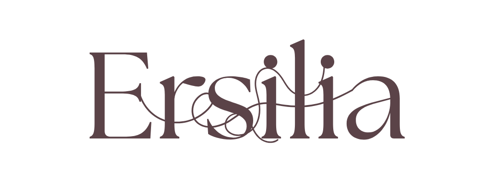
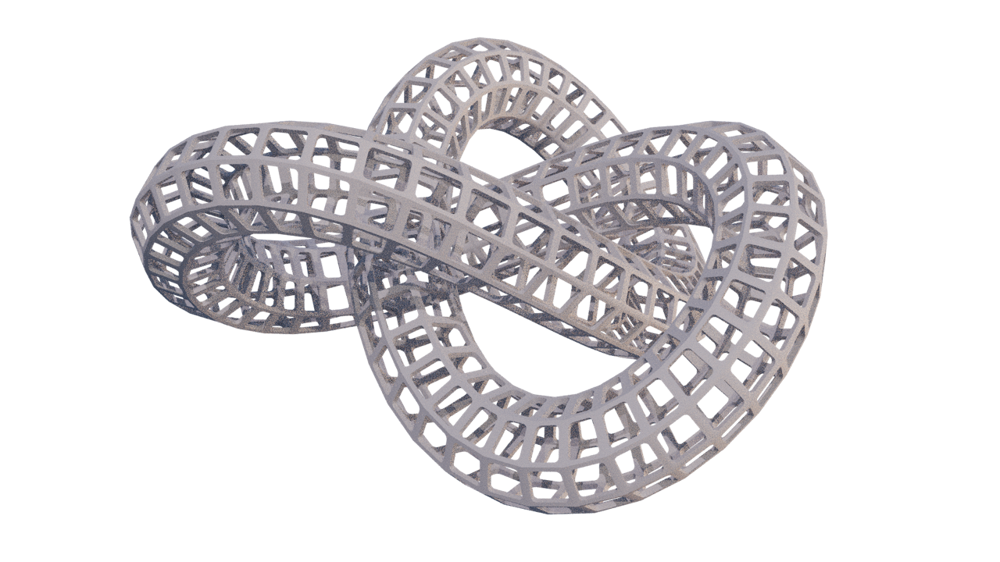
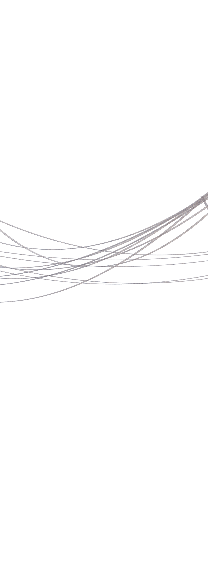
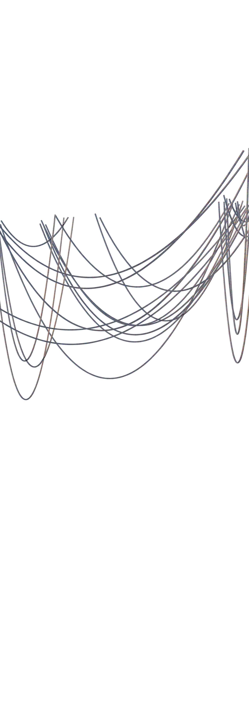

In Ersilia,
the people chart the ties that hold the city together
by stretching strings from house to house
in different hues,
each showing a bond of
kinship,
commerce,
power,
influence…
When the strings multiply so densely
that no one can move among them,
the inhabitants depart.
They take apart their houses,
leaving only the labyrinth of threads.
From the mountain slopes
where they camp with their belongings,
the displaced citizens look down
at the web of taut lines
rising from the plain.
Ersilia persists in the cords;
the people, apart from it,
are nothing.
They build the city again elsewhere,
weaving a new network,
hoping for greater order,
greater complexity,
until that too becomes impossible to inhabit.
TThen they abandon it once more
hen they abandon it once more
and move on.
So when you cross the lands of Ersilia,
you find the remains of these forsaken towns:
nothing but spiderwebs of relationships,
intricate,
suspended,
forever searching for a shape.






